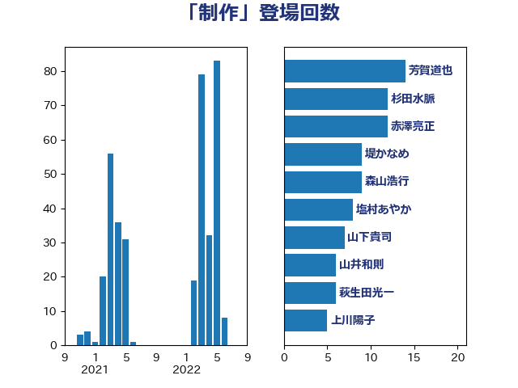

単語「制作」

| 芳賀道也 | 国民民主党 | 14 回 |
| 杉田水脈 | 自由民主党 | 12 回 |
| 赤澤亮正 | 自由民主党 | 12 回 |
| 堤かなめ | 立憲民主党 | 9 回 |
| 森山浩行 | 立憲民主党 | 9 回 |
| 塩村あやか | 立憲民主党 | 8 回 |
| 山下貴司 | 自由民主党 | 7 回 |
| 山井和則 | 立憲民主党 | 6 回 |
| 萩生田光一 | 自由民主党 | 6 回 |
| 上川陽子 | 自由民主党 | 5 回 |
| 上野賢一郎 | 自由民主党 | 5 回 |
| 國重徹 | 公明党 | 5 回 |
| 伊藤孝恵 | 国民民主党 | 4 回 |
| 加藤勝信 | 自由民主党 | 4 回 |
| 吉良よし子 | 日本共産党 | 4 回 |
| 岡本あき子 | 立憲民主党 | 4 回 |
| 本田顕子 | 自由民主党 | 4 回 |
| 足立康史 | 日本維新の会 | 4 回 |
| 鎌田さゆり | 立憲民主党 | 4 回 |
| 山田宏 | 自由民主党 | 3 回 |
| 武田良太 | 自由民主党 | 3 回 |
| 細田博之 | 自由民主党 | 3 回 |
| 吉川元 | 立憲民主党 | 2 回 |
| 安達澄 | 無所属 | 2 回 |
| 宮崎政久 | 自由民主党 | 2 回 |
| 山田太郎 | 自由民主党 | 2 回 |
| 岸田文雄 | 自由民主党 | 2 回 |
| 本村伸子 | 日本共産党 | 2 回 |
| 柚木道義 | 立憲民主党 | 2 回 |
| 柳ヶ瀬裕文 | 日本維新の会 | 2 回 |
| 河西宏一 | 公明党 | 2 回 |
| 西村康稔 | 自由民主党 | 2 回 |
| 道下大樹 | 立憲民主党 | 2 回 |
| 阿部弘樹 | 日本維新の会 | 2 回 |
| 三木亨 | 自由民主党 | 1 回 |
| 伊藤孝江 | 公明党 | 1 回 |
| 加田裕之 | 自由民主党 | 1 回 |
| 和田政宗 | 自由民主党 | 1 回 |
| 塩田博昭 | 公明党 | 1 回 |
| 宮本岳志 | 日本共産党 | 1 回 |
| 小野泰輔 | 日本維新の会 | 1 回 |
| 山谷えり子 | 自由民主党 | 1 回 |
| 平沢勝栄 | 自由民主党 | 1 回 |
| 末松信介 | 自由民主党 | 1 回 |
| 河野太郎 | 自由民主党 | 1 回 |
| 泉田裕彦 | 自由民主党 | 1 回 |
| 田村憲久 | 自由民主党 | 1 回 |
| 田畑裕明 | 自由民主党 | 1 回 |
| 細田健一 | 自由民主党 | 1 回 |
| 藤井比早之 | 自由民主党 | 1 回 |
| 西岡秀子 | 国民民主党 | 1 回 |
| 谷田川元 | 立憲民主党 | 1 回 |
| 赤羽一嘉 | 公明党 | 1 回 |
| 金城泰邦 | 公明党 | 1 回 |
| 鈴木庸介 | 立憲民主党 | 1 回 |
| 青山繁晴 | 自由民主党 | 1 回 |
| 音喜多駿 | 日本維新の会 | 1 回 |